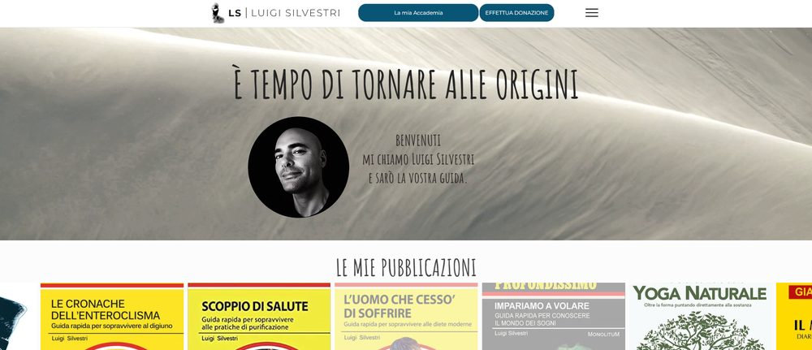
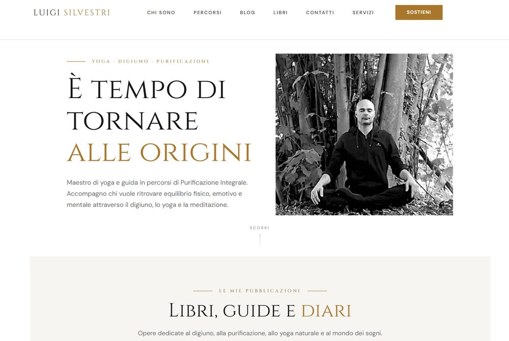
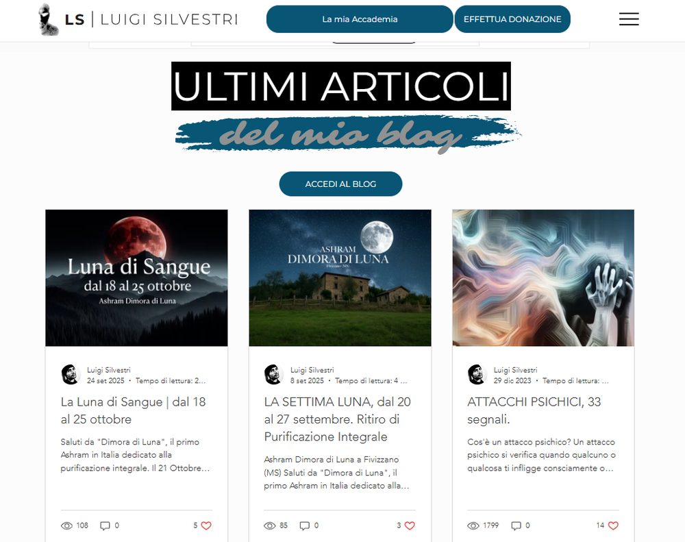
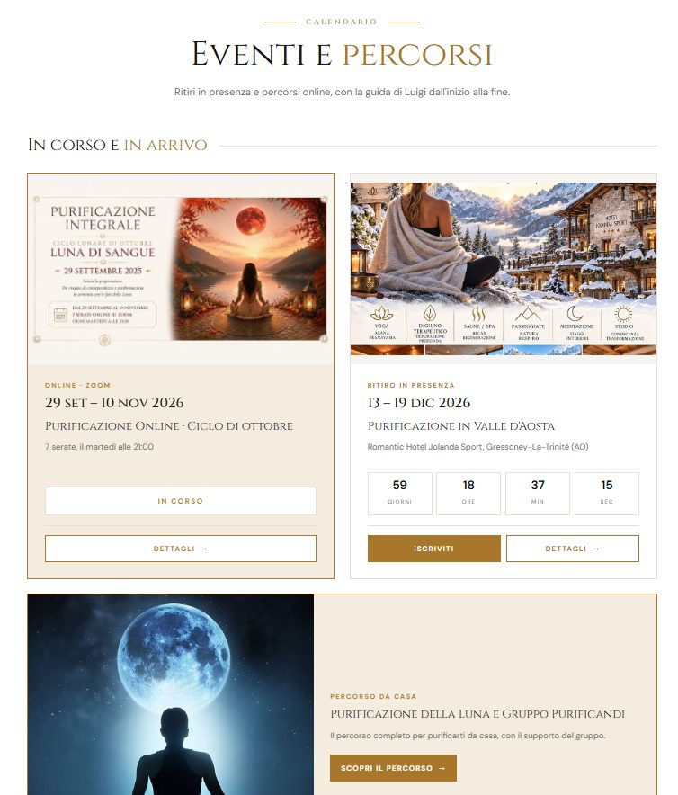
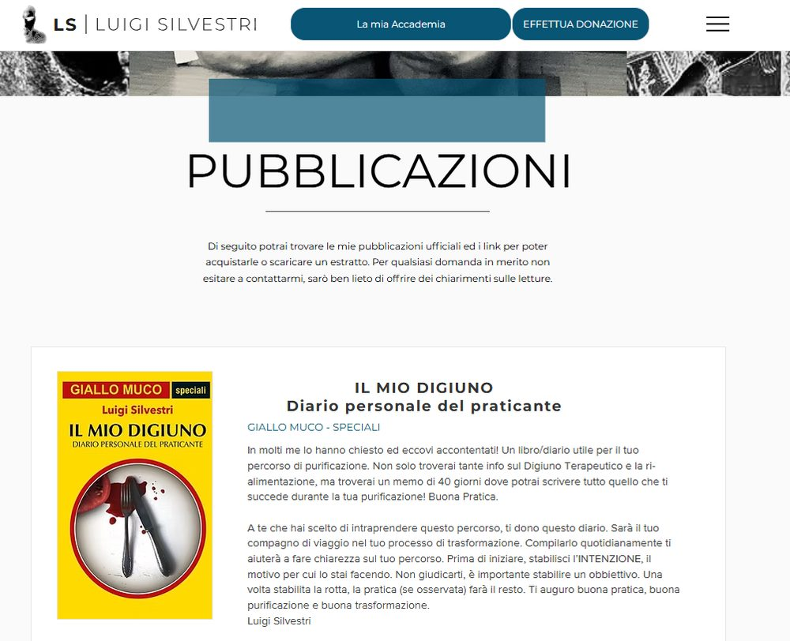
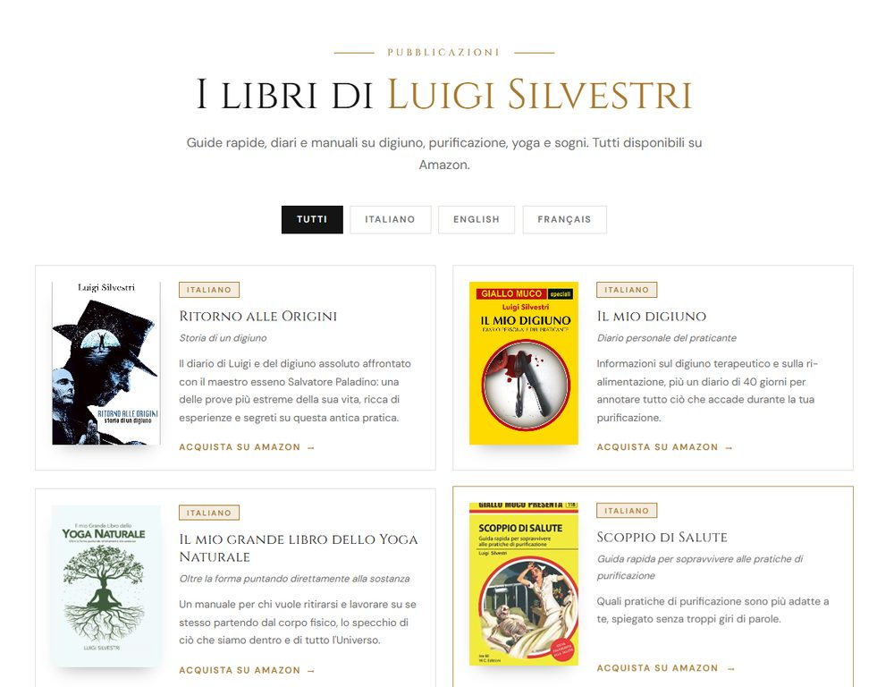
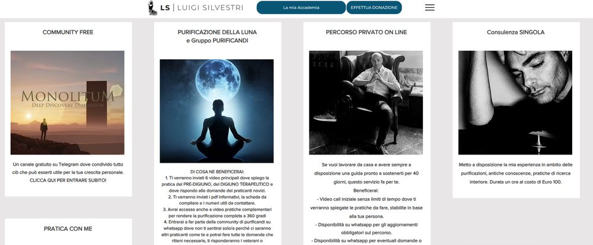
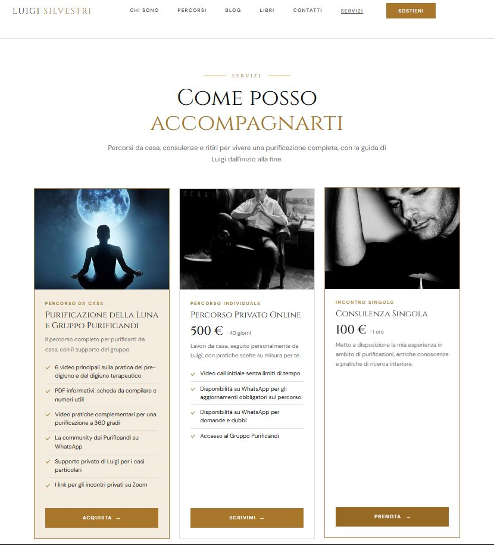
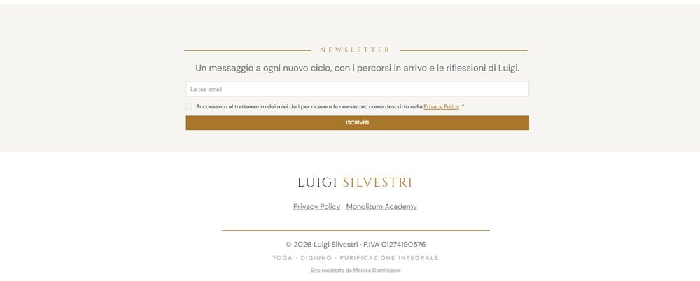

Un sito già ricco di contenuti, ma disordinato: ho tenuto il materiale e ho rifatto struttura e grafica, separando gli eventi dal blog e mettendo ordine in libri e servizi.
Il sito di Luigi aveva tutto quello che serviva — libri, articoli, percorsi, eventi — ma non era facile orientarsi. Stili grafici diversi nella stessa pagina, blocchi di testo lunghi in colonne strette, e soprattutto gli eventi pubblicati come articoli del blog, mescolati ai post. Chi arrivava sul sito doveva fare fatica per capire cosa poteva fare e quando.









Rifare un sito non vuol dire solo cambiare la grafica: vuol dire capire come sono organizzati i contenuti e dove chi visita si perde. In questo caso la mossa più utile è stata separare cose che vivevano insieme — gli eventi dal blog — e ridurre il resto a pochi schemi ripetuti. È lo stesso modo di ragionare che uso sui processi aziendali: prima si guarda dove nasce la confusione, poi si sceglie lo strumento, qui Wix, che serve a risolverla.